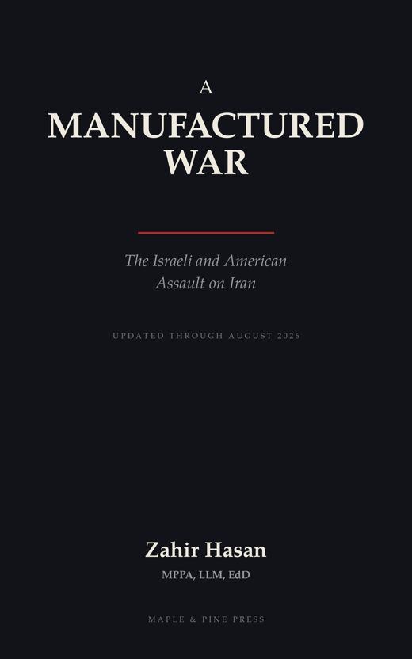

A Manufactured War
The Israeli and American Assault on Iran

On 28 February 2026, American and Israeli aircraft struck Iran. Within hours the Supreme Leader was dead, the Strait of Hormuz was closing, and the world was pricing in the largest oil shock in history. Governments called it necessity. This book calls it a choice.
A Manufactured War traces how three decades of warnings, the deliberate dismantling of the nuclear deal, and the domestic troubles of two embattled leaders converged to produce a war that experts had long predicted — and that diplomacy had nearly prevented just days before the first strikes.
This edition is updated through August 2026, adding six new chapters and more than thirteen thousand words. They follow the collapse of the Islamabad talks and the naval blockade that came after; the fourteen-point memorandum signed at Versailles and the ambiguities that unravelled it within a fortnight; the contested succession inside Iran after Khamenei’s killing; the economic damage, now measured rather than forecast, from Dhaka to Berlin; the unanswered constitutional question of who may take a country to war; and the summer of attrition in which a conflict neither government calls a war has quietly become permanent. A dated chronology runs from the 2015 nuclear deal to the present.
Drawing on parliamentary briefings, government documents, and research from across the region — fully referenced throughout — this is a clear, unflinching account for students of policy, for investors, and for every reader who wants to understand how avoidable wars are made, and how they might be made harder.
Ebook and paperback · Maple & Pine Press
- Author
- Dr. Zahir Hasan
- Publisher
- Maple & Pine Press, Tokyo
- List
- Politics, Law & International Affairs